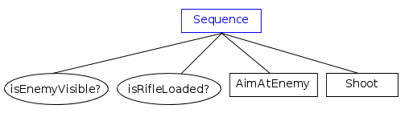
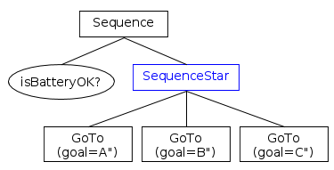
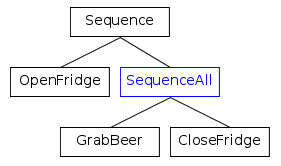

Sequences
A Sequence ticks all it's children, from left to right, as long as they return SUCCESS. If any child returns FAILURE, the sequence is suspended.
Here we introduce two kinds of TreeNodes:
- SequenceNode
- SequenceStarNode
- SequenceAllNode
The best way to determine which one should be used is to ask yourself:
Q: "What should I do if one of the childs returns FAILURE?"
Use SequenceNode if you answer is:
A: "Restart the entire sequence"
Use SequenceStarNode if, instead, the answer is:
A: "Try again to execute the failed child.
Do not re-tick children which succeeded already."
SequenceAllNode is used when you want all the children to be ticked at least once. If any of them failed, the SequenceAllNode returns FAILURE.
The shared logic is:
- Before ticking the first child, SequenceNode becomes RUNNING.
- If a child returns SUCCESS, it ticks the next child.
- If the last child returns SUCCESS too, all the children are halted and the SequenceNode returns SUCCESS.
- If a child returns RUNNING, Sequence suspends and returns RUNNING. The next time it is ticked, it will use the same index.
The three Sequences differ in what they do if a child returns FAILURE.
SequenceNode
If a child returns FAILURE, the sequence returns FAILURE. Reset the index and halt all the children. The entire sequence will be executed again at the next tick.
Example:
This tree represents the behavior of a sniper in a computer game. If any of these conditions/actions fails, the entire sequence is executed again from the beginning.

See the pseudocode
// At the beginning, start from first child if( state != RUNNING) { index = 0; } state = RUNNING; while( index < number_of_children ) { child_state = child[index]->tick(); if( child_state == RUNNING ) { // Suspend execution and return RUNNING. // At the next tick, index will be the same. state = RUNNING; return state; } else if( child_state == SUCCESS ) { // continue the while loop index++; } else if( child_state == FAILURE ) { // Suspend execution and return FAILURE. // index is reset and children are halted. state = FAILURE; index = 0; HaltAllChildren(); return state; } } // all the children returned success. Return SUCCESS too. state = SUCCESS; HaltAllChildren(); return state;
SequenceStarNode
If a child returns FAILURE, the sequence returns FAILURE. At the next tick, the failed child is executed again.
Example:
This is a patrolling agent/robot that must visit locations A, B and C only once. If the action GoTo(B) fails, GoTo(A) is not ticked again.
Note as isBatteryOK is visited at every tick, because its parent is a normal SequenceNode.

See the pseudocode
// index is initialized to 0 in the constructor state = RUNNING; while( index < number_of_children ) { child_state = child[index]->tick(); if( child_state == RUNNING ) { // Suspend execution and return RUNNING. // At the next tick, index will be the same. state = RUNNING; return state; } else if( child_state == SUCCESS ) { // continue the while loop index++; } else if( child_state == FAILURE ) { // Suspend execution and return FAILURE. // At the next tick, index will be the same. state = FAILURE; return state; } } // all the children returned success. Return SUCCESS too. state = SUCCESS; HaltAllChildren(); return state;
SequenceAllNode
All the children are executed at least once. If any child returned FAILURE, the sequence is not interrupted but the sequence itself will return FAILURE.
Example:
If the door of the fridge was succesfully opened, grab a beer. CloseFridge is always executed, even when GrabBeer failed.

See the pseudocode
if( state != RUNNING) { index = 0; at_least_one_failure = false; } state = RUNNING; while( index < number_of_children ) { child_state = child[index]->tick(); if( child_state == RUNNING ) { // Suspend execution and return RUNNING. // At the next tick, index will be the same. state = RUNNING; return state; } else if( child_state == SUCCESS ) { index++; } else if( child_state == FAILURE ) { index++; at_least_one_failure = true; } } // If any child failed, the entire sequence fails. state = at_least_one_failure ? FAILURE : SUCCESS; HaltAllChildren(); return state;